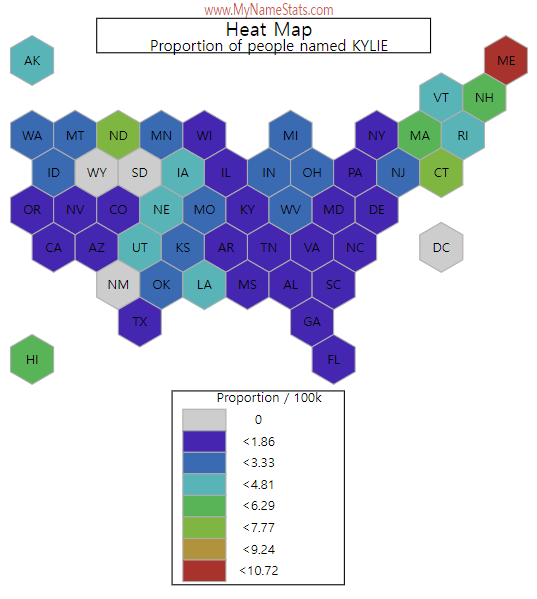

Kylie (also spelled Kilee, Kileigh, Kiley, Kylee, Kyleigh, Kyley, or Kyly) is a feminine given name.
How common is the name Kylie for a baby born in 2021? Kylie was the 159th most popular girls name. In 2021 there were 1,794 baby girls named Kylie. 1 out of every 992 baby girls born in 2021 are named Kylie.
